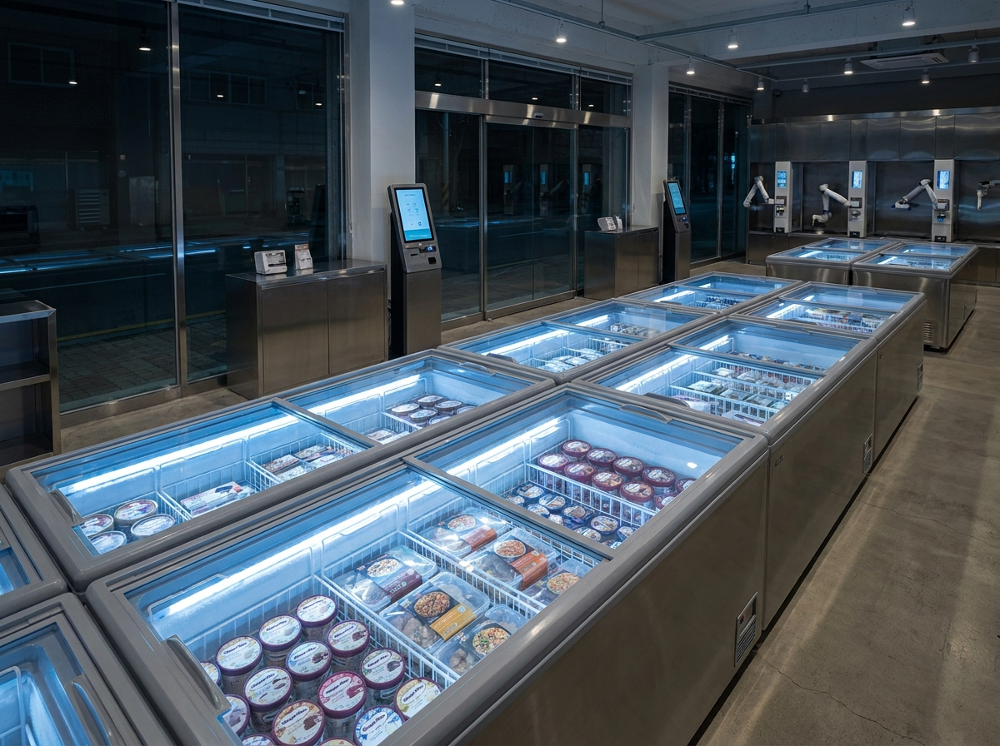
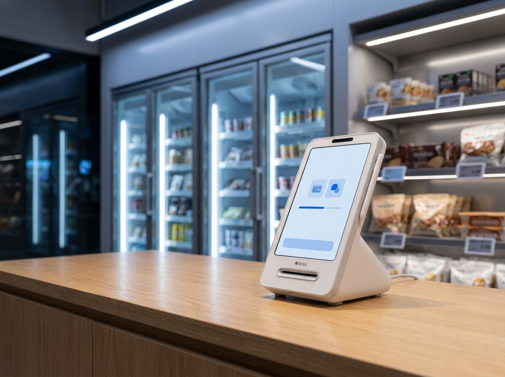
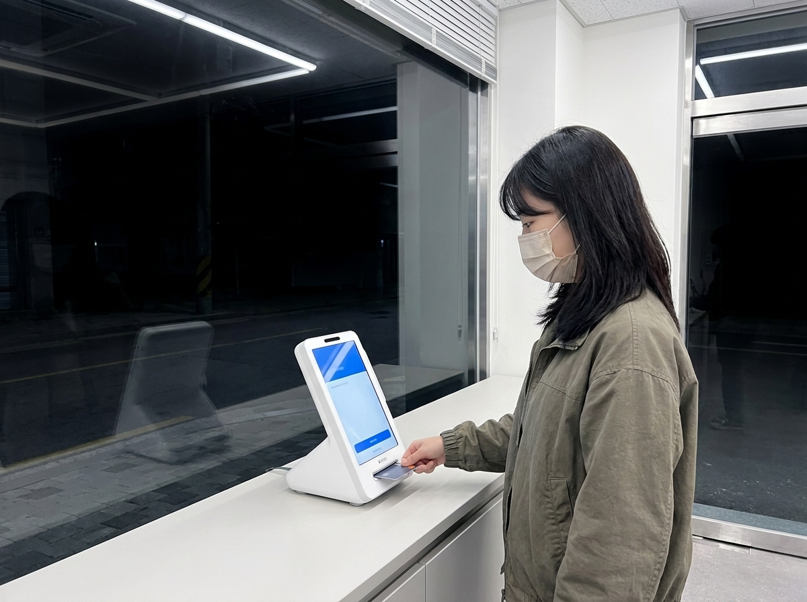

무인매장 창업, 인건비 아끼려다 놓치기 쉬운 진짜 핵심은 결제·키오스크입니다
결론부터 말씀드리면, 무인매장은 인건비와 운영시간에서 분명한 이점이 있지만 도난·기기 관리·정산·CS 같은 현실적 부담을 함께 안고 가는 사업이며, 성패를 가르는 실질적 핵심은 결국 결제와 키오스크의 안정성입니다. 저희 누리네트웍스는 14년간 수도권에서 3만 곳이 넘는 매장의 결제 환경을 직접 설치·관리해 왔고, 최근 몇 년간 무인 카페·아이스크림·밀키트·세탁 매장의 셋업 문의가 눈에 띄게 늘고 있습니다. 그 현장에서 반복적으로 확인한 것은, "사람이 없는 매장일수록 기계가 대신 정확하게 일해줘야 한다"는 단순한 사실입니다. 이 글에서는 무인매장 창업의 배경과 장단점을 과장 없이 정리하고, 왜 결제·키오스크 구성이 무인매장의 심장인지 현실적으로 짚어드리겠습니다.

무인매장 창업이 늘어나는 배경
무인 카페, 무인 아이스크림 할인점, 무인 밀키트, 무인 세탁소가 동네마다 늘어난 이유는 명확합니다. 인건비 부담과 구인난이 자영업의 가장 큰 고민으로 자리 잡으면서, 사람을 상시 두지 않고도 운영이 가능한 업종에 관심이 쏠린 것입니다. 특히 서울·인천·경기 등 수도권은 임대료와 인건비가 모두 높아, 24시간 무인 운영으로 운영시간을 늘리면서도 고정 인건비를 줄이는 모델이 매력적으로 다가옵니다.
여기에 키오스크·무인 결제·원격 관제 기술이 대중화되면서 초기 진입 장벽이 낮아진 것도 한몫했습니다. 예전에는 큰 프랜차이즈나 가능했던 무인 운영이, 이제는 개인 사장님도 소규모 매장으로 시작할 수 있게 된 것입니다. 송도·동탄·판교처럼 젊은 1~2인 가구와 직장인이 많은 지역에서 무인매장이 빠르게 확산되는 것도 이런 흐름과 맞물려 있습니다.
다만 "사람이 없으니 편하겠지"라는 기대만으로 시작하면 현실의 벽에 부딪히기 쉽습니다. 무인은 인력을 없애는 것이 아니라, 사람이 하던 일을 시스템과 원격 관리로 대체하는 구조라는 점을 먼저 이해해야 합니다. 상품 보충 주기, 폐기 관리, 심야 취객·미성년자 응대 같은 변수는 업종마다 다르므로, 창업 전 같은 업종 매장을 시간대별로 직접 둘러보시길 권합니다.
무인매장의 장점과 현실적 어려움 한눈에 정리
무인매장을 고민하실 때 장점과 부담을 함께 놓고 보시는 것이 좋습니다. 아래 표로 개념을 정리했습니다.
| 구분 | 장점 | 현실적 어려움 | 참고 |
|---|---|---|---|
| 인건비 | 상시 인력 부담 감소 | 청소·보충·점검 인력은 여전히 필요 | 완전 무인은 드묾 |
| 운영시간 | 24시간·심야 매출 확보 | 심야 도난·기물 파손 위험 | CCTV·출입관리 필수 |
| 관리 | 원격 모니터링 가능 | 기기 오류 시 즉시 대응 어려움 | 원격 관제 구성 중요 |
| 고객응대 | 대면 스트레스 감소 | 결제 오류·환불 CS는 전화로 집중 | 안정적 결제가 핵심 |
| 정산 | 자동 집계·데이터화 | 기기·채널별 정산 대사 번거로움 | 통합 관리 유리 |
위 표는 이해를 돕기 위한 개념 정리이며, 창업 지원제도나 세제·인허가 등 정확한 내용은 소상공인시장진흥공단·중소벤처기업부·관할 지자체 등 공식기관을 통해 반드시 확인하시기 바랍니다. 특히 무인매장은 담배·주류 판매, 청소년 보호, 식품위생 등 업종별 인허가 요건이 다르므로 개업 전 관할 기관 확인이 필수입니다.
표에서 보시듯 무인매장의 장점은 대부분 "제대로 된 시스템이 뒷받침될 때" 성립합니다. 도난은 CCTV와 출입 관리로, 기기 오류는 원격 관제로, 정산 혼선은 통합 결제 구성으로 줄일 수 있습니다. 반대로 이 부분이 약하면 무인의 장점은 그대로 리스크로 바뀝니다.

무인이라도 결제·키오스크가 흔들리면 매장이 멈춥니다
무인매장에서 가장 뼈아픈 순간은 언제일까요. 바로 손님은 왔는데 결제가 안 되는 순간입니다. 직원이 있는 매장이라면 "잠시만요, 다른 방법으로 도와드릴게요"가 되지만, 무인매장에서는 그 한 번의 결제 오류가 곧바로 매출 이탈과 나쁜 후기로 이어집니다. 심야 시간에 키오스크가 멈추면 다음 날 사장님이 확인할 때까지 매장이 사실상 문을 닫은 것과 같습니다.
그래서 무인매장일수록 키오스크의 안정성, 결제 승인 속도, 다양한 결제수단 지원이 중요합니다. 카드는 물론 삼성페이·애플페이·네이버페이·카카오페이 같은 간편결제, 상황에 따라 알리·위챗페이까지 막힘없이 처리돼야 손님을 놓치지 않습니다. 또한 기기 상태를 원격으로 확인하고, 오류를 조기에 감지할 수 있는 구성이라면 사장님이 매장에 상주하지 않아도 대응 속도를 크게 높일 수 있습니다.
정산 관점도 마찬가지입니다. 결제 채널이 뒤죽박죽이면 매출 대사가 번거롭고 실수가 생깁니다. 결제와 키오스크를 하나의 안정된 구성으로 묶어 매출 데이터가 깔끔하게 집계되도록 하는 것이, 무인 운영의 숨은 핵심입니다. 여기에 배리어프리(무장애) 키오스크처럼 누구나 쉽게 조작할 수 있는 화면 구성을 갖추면, 연령대가 다양한 손님까지 놓치지 않고 매출로 이어갈 수 있습니다.
누리네트웍스가 무인매장 사장님과 함께하는 방식
누리네트웍스는 수도권을 직접 발로 뛰는 POS·결제단말 대리점입니다. 14년간 3만 곳이 넘는 매장을 함께해 왔고, 무인 카페·아이스크림·밀키트·세탁 등 다양한 무인매장을 포함해 200곳이 넘는 레퍼런스와 연매출 70억 규모의 운영 경험을 쌓아왔습니다. 저희는 대리점을 여러 단계 거치지 않고 수도권 직접 설치·관리를 원칙으로 하기 때문에, 설치 후 문제가 생겼을 때의 대응 속도가 다릅니다.
무인매장은 특히 초기 구성이 중요합니다. 매장 동선과 업종에 맞는 키오스크 배치, 안정적인 결제단말 구성, 원격 관리 환경을 함께 설계해 드리고, 손님이 어떤 결제수단을 꺼내도 막힘없이 처리되도록 세팅합니다. 비용은 매장 규모와 구성에 따라 달라지므로 상담 시 거품을 뺀 직접 공급가로 정확히 안내드립니다. 다만 토스단말기와 네이버단말기는 월 0원·약정 없음 조건으로 안내가 가능해, 초기 부담을 줄이려는 무인 창업 사장님들께 특히 문의가 많습니다.
무엇보다 저희가 강조드리는 것은 "무인이라고 방치하지 않는다"는 점입니다. 설치가 끝이 아니라, 기기가 조용히 잘 돌아가는지가 진짜 시작입니다.

자주 묻는 질문(FAQ)
Q. 무인매장이면 정말 인건비가 전혀 안 드나요?
완전한 무인은 현실적으로 드뭅니다. 청소, 재료·상품 보충, 기기 점검, 민원 대응에는 사장님이나 파트 인력의 손이 필요합니다. 상시 인건비를 크게 줄일 수 있는 것은 맞지만 "0원"으로 보기보다는, 사람 대신 시스템과 원격 관리가 그 역할을 나눠 맡는다고 이해하시는 편이 정확합니다.
Q. 무인매장 도난이 걱정됩니다. 어떻게 대비하나요?
CCTV, 출입·결제 로그, 상황에 따른 출입 인증 등을 함께 구성하는 것이 기본입니다. 결제·키오스크 데이터와 CCTV를 연계해 두면 사후 확인이 수월해집니다. 다만 방범·보안 관련 구체적 기준이나 지원제도는 관할 경찰서·지자체 등 공식기관 안내를 함께 확인하시길 권합니다.
Q. 무인 창업 관련 지원금이나 세제 혜택이 있나요?
시기와 업종, 지역에 따라 창업·스마트상점 관련 지원사업이 운영되기도 합니다. 다만 신청 자격·기간·금액은 자주 바뀌므로 소상공인시장진흥공단, 중소벤처기업부, 관할 지자체 등 공식기관과 국세청 홈택스에서 최신 내용을 직접 확인하셔야 합니다. 저희는 세무·정책 판단을 대신해 드리지 않습니다.
Q. 무인매장 키오스크가 심야에 멈추면 어떻게 하나요?
원격 관리 구성을 갖추면 기기 상태를 떨어진 곳에서도 확인하고 재부팅·점검 안내 등 초기 대응을 앞당길 수 있습니다. 설치 단계에서 이런 원격 관제와 신속한 A/S 동선을 함께 설계하는 것이 무인 운영의 안정성을 크게 좌우합니다.
무인매장, 시작 전에 결제·키오스크부터 상담하세요
무인 창업을 준비하신다면 매장 인테리어나 상품 구성 못지않게 결제와 키오스크 구성을 먼저 점검하시길 권합니다. 누리네트웍스는 수도권 무인매장의 현실을 잘 아는 파트너로서, 업종과 동선에 맞는 안정적인 구성을 거품 없이 제안드립니다. 무엇이든 편하게 문의 주시면, 사장님 매장에 꼭 맞는 방향을 함께 찾아드리겠습니다.
- 📞 전화상담 1544-7754
- 🌐 홈페이지 nwpos.co.kr


이미지1-매장: 심야에도 불이 켜진 수도권 무인 카페 매장 전경
이미지2-제품: 카운터에 설치된 키오스크와 결제단말 구성 모습
이미지3-사용: 손님이 키오스크에서 간편결제로 직접 주문·결제하는 장면